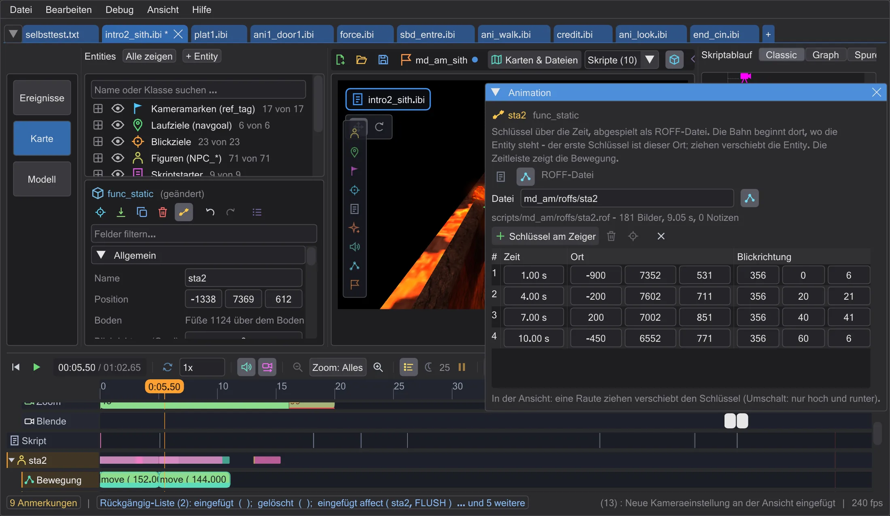
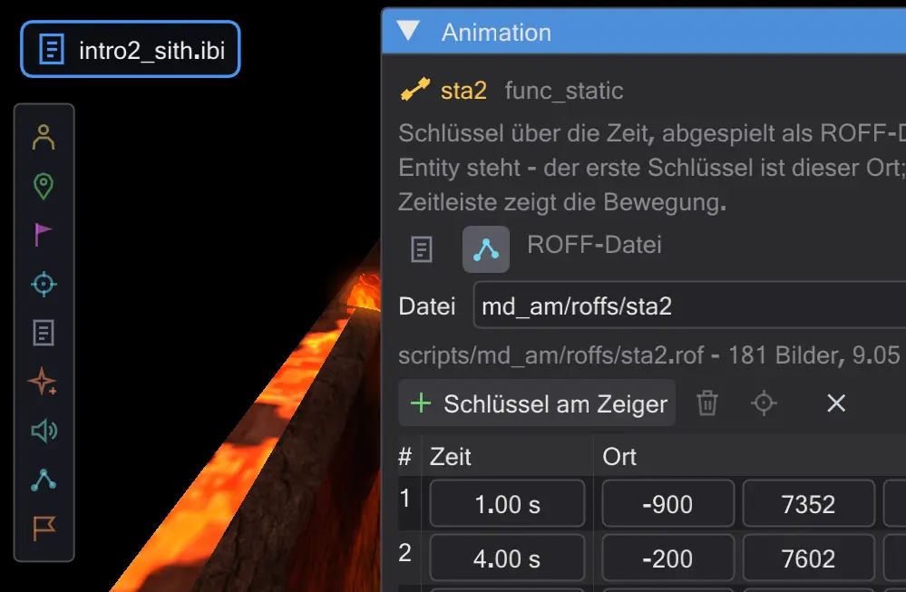

Mover animieren und ROFF-Dateien
Schiffe, Türen und Plattformen bewegen sich über Schlüssel in der Zeit. Speichere sie als move-Befehle im Skript oder als ROFF-Datei - und bearbeite die ROFF-Dateien des Spiels.

Das Fenster öffnen#
Wähle eine bewegliche Entity - func_*-Brush-Entities wie func_static-Schiffe und func_door, misc_model_breakable, fx_runner - und drücke Animieren im Inspektor. Hat sie noch keinen script_targetname, bekommt sie einen, denn ein Skript kann nur bewegen, was einen Namen hat.
Schlüssel#
- 1
Stell die Zeitleiste dorthin, wo die Bewegung beginnt, und drücke Schlüssel am Zeiger - der erste Schlüssel merkt sich, wo die Entity steht.
- 2
Geh in der Zeit weiter und drück ihn noch einmal. Dann die neue Raute in der Ansicht ziehen (Umschalt: nur hoch und runter) oder Werte in die Tabelle tippen: Zeit, Ort, Richtung.
- 3
Oder einfach das Gizmo: solange das Fenster diese Entity zeigt und die Zeitleiste am ersten Schlüssel oder danach steht, setzt Verschieben oder Drehen mit dem Gizmo einen Schlüssel am Zeiger (oder ändert den, der dort steht).
- 4
Schlüssel löschen und Zum Schlüssel wirken auf die gewählte Zeile; Animation entfernen nimmt die ganze Animation aus dem Skript.
Skript (move) oder ROFF-Datei#
| Skript (move) | ROFF-Datei | |
|---|---|---|
| Gespeichert als | ein affect-Block mit move und wait am Anfang des Skripts | scripts/<Name>.rof, abgespielt mit play ( "PLAY_ROFF", ... ) |
| Zwischen den Schlüsseln | jede Fahrt beginnt schnell und läuft langsam aus wie die Mover des Spiels (oder gleichmäßig mit Gleichmäßig) | ein weicher Bogen durch alle Schlüssel (Weich) oder gerade Stücke |
| Gut für | Türen, Aufzüge, ein Schiff, das durchs Bild fliegt | lange freie Flüge mit vielen Kurven, Effekte auf genaue Bilder |
Umschalten mit Skript (move) / ROFF-Datei oben im Fenster - die Schlüssel werden umgewandelt, nichts geht verloren. Im ROFF-Modus nennt das Feld Datei die Datei (zum Beispiel md_am/roffs/sta2); darunter steht, wie viele Bilder und Sekunden sie hat.
Wie ROFF-Dateien funktionieren#
Eine ROFF-Datei (.rof, "Rotation and Origin File Format") speichert je Spielbild einen kleinen Schritt: wie weit sich die Entity in den nächsten 50 ms bewegt und dreht. Das Spiel addiert diese Schritte zu dem Ort, an dem die Entity steht, wenn PLAY_ROFF läuft - eine ROFF-Bahn ist also relativ: verschiebst du die Entity, wandert die ganze Bahn mit. Alle 108 Dateien des Spiels und von Movie Duels sind Fassung 2, alle bis auf eine mit 50 ms je Bild - und so schreibt BehavEd-Remake sie auch.
Die Schlüssel, die du bearbeitest, stehen als Kommentarzeile im Skript direkt vor dem play; die .rof wird aus ihnen gebaut. Deshalb wirken Rückgängig, Kopieren und Einfügen auf ROFF-Bahnen wie auf jeden Befehl. Beim Speichern des Skripts wird die Datei als scripts/<Name>.rof in denselben scripts-Ordner geschrieben; Mission speichern packt sie ins .pk3 der Mission.
Eine ROFF-Datei des Spiels bearbeiten#
Spielt ein Skript eine fertige ROFF auf der Entity ab, nennt das Fenster sie unter ROFF-Bahnen dieser Entity im Skript:. Bearbeiten zerlegt sie in Schlüssel - entweder gerade Stücke oder einen weichen Bogen, je nachdem, was mit weniger Schlüsseln auskommt -, bis auf eine halbe Einheit genau. Die Datei des Spiels wird nie überschrieben: du bearbeitest eine Kopie (…_2), und der play-Befehl zeigt auf sie.

Animation